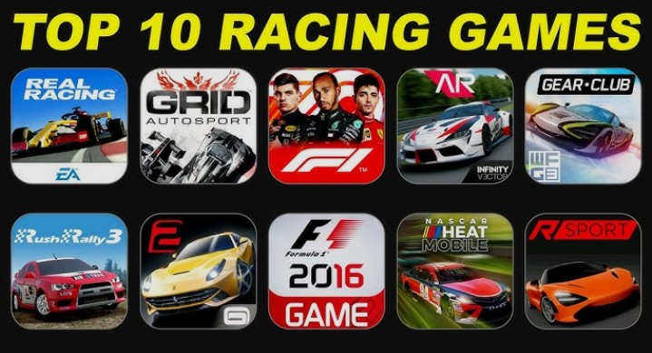

Looking for the best racing games for Android in 2026? Whether you enjoy fast arcade racing, realistic driving, drifting, rally racing or kart battles, Android has plenty of exciting racing games to choose from.
In this guide, we have selected 10 racing games that offer different styles of gameplay. Some focus on fast arcade action, while others are designed for players who prefer realistic driving physics, car customization and competitive racing.
🏁 Top 10 Racing Games for Android in 2026
-
1. Asphalt Legends
Asphalt Legends is one of the most popular arcade-style racing games. It focuses on fast races, spectacular cars, nitro boosts and action-packed tracks. The official website highlights cross-platform play, multiple game modes and both Manual and TouchDrive controls.
Best for: Arcade racing and fast action
Official Website: Visit Asphalt Legends Official Website
-
2. Need for Speed No Limits
Need for Speed No Limits brings the famous Need for Speed street-racing experience to mobile. Players can race through the streets of Blackridge, customize cars and compete in high-speed events.
Best for: Street racing and car customization
Official Website: Visit EA Official Website
-
3. CarX Street
CarX Street is an open-world street racing game focused on driving, drifting and detailed car tuning. Players can explore Sunset City, race on highways and city streets, and build cars using detailed customization options.
Best for: Open-world racing, drifting and tuning
Official Website: Visit CarX Street Official Website
-
4. CarX Drift Racing 2
CarX Drift Racing 2 is designed for players who enjoy drifting and car control. The game focuses heavily on drift physics, vehicle customization and competitive driving challenges.
Best for: Drifting and car tuning
Official Website: Visit CarX Official Website
-
5. GRID Autosport
GRID Autosport is a strong choice for players who want a more realistic racing experience on mobile. Feral Interactive describes the mobile version as combining simulation handling with arcade-style racing. It is available for Android and iOS.
Best for: Realistic racing and professional-style driving
Official Website: Visit Feral Interactive Official Website
-
6. Wreckfest
Wreckfest offers a different type of racing experience with crashes, vehicle damage and demolition-style events. It is a good choice for players who enjoy aggressive racing and destructive car battles.
Best for: Destruction racing and realistic vehicle damage
Official Website: Visit Wreckfest Official Website
-
7. Rush Rally 3
Rush Rally 3 is made for players who prefer rally racing. It features different surfaces, changing weather and challenging rally stages. The developer describes it as a realistic handheld rally simulator.
Best for: Rally racing and realistic driving
Official Website: Visit Brownmonster Games Official Website
-
8. Traffic Rider
Traffic Rider takes racing to two wheels. Instead of traditional car racing, players ride motorcycles through traffic while completing different challenges. It is a good option for players who want a simple and fast motorcycle racing experience.
Best for: Motorcycle racing and traffic challenges
Official Website: Visit Traffic Rider Official Website
-
9. CSR Racing 2
CSR Racing 2 focuses on drag racing rather than traditional circuit racing. Players can collect cars, customize them and compete in straight-line races.
Best for: Drag racing and car collecting
Official Website: Visit CSR Racing 2 Official Website
-
10. Beach Buggy Racing 2
Beach Buggy Racing 2 is a colorful kart-racing game with fun tracks, special power-ups, different drivers and online competitions. It is a good choice for casual players and families who prefer a lighter racing experience.
Best for: Casual kart racing and multiplayer fun
Official Website: Visit Vector Unit Official Website
🏆 Which Racing Game Should You Choose?
The best racing game depends on the type of experience you want. If you enjoy fast arcade racing, Asphalt Legends is an excellent choice. Players who prefer street racing can try Need for Speed No Limits or CarX Street.
For realistic driving, GRID Autosport and Rush Rally 3 are strong options. If you enjoy drifting, CarX Drift Racing 2 is worth trying. For players who prefer crashes and destruction, Wreckfest offers a very different racing experience.
🎮 Best Racing Games by Category
- Best Arcade Racing: Asphalt Legends
- Best Street Racing: Need for Speed No Limits
- Best Open-World Racing: CarX Street
- Best Drifting: CarX Drift Racing 2
- Best Realistic Racing: GRID Autosport
- Best Destruction Racing: Wreckfest
- Best Rally Racing: Rush Rally 3
- Best Motorcycle Racing: Traffic Rider
- Best Drag Racing: CSR Racing 2
- Best Kart Racing: Beach Buggy Racing 2
📱 Online vs Offline Racing Games
Some racing games are designed around online competition, events and multiplayer features, while others offer substantial single-player experiences. Before installing a game, check its official store or developer page for the latest internet and device requirements.
💡 How to Choose the Best Racing Game
When choosing a racing game for Android, consider your phone's performance, available storage, internet connection and preferred racing style.
If your phone has limited storage or older hardware, a lighter racing game may provide a better experience. High-end games can require more storage and stronger hardware for smooth graphics and performance.
❓ Frequently Asked Questions
What is the best racing game for Android in 2026?
There is no single best racing game for everyone. Asphalt Legends is a strong choice for arcade racing, while GRID Autosport is better suited to players looking for a more realistic racing experience.
Which racing game is best for drifting?
CarX Drift Racing 2 is a strong option for players who specifically enjoy drifting and car customization.
Which racing game is best for street racing?
Need for Speed No Limits and CarX Street are good choices for players who enjoy street racing.
Are these official game websites?
Yes. The official website links in this article point to the publishers, developers or official game pages. Always use official sources when looking for game information or downloads.
Can every Android phone run these games?
No. Device requirements vary from game to game. Check the official game page or Google Play listing before installing a demanding racing game.